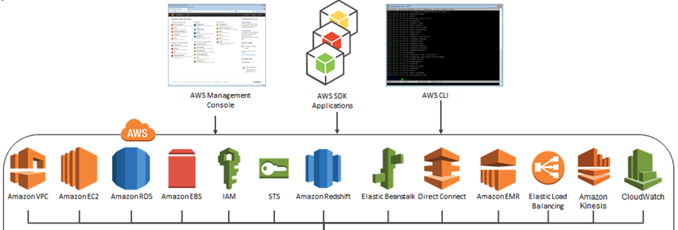
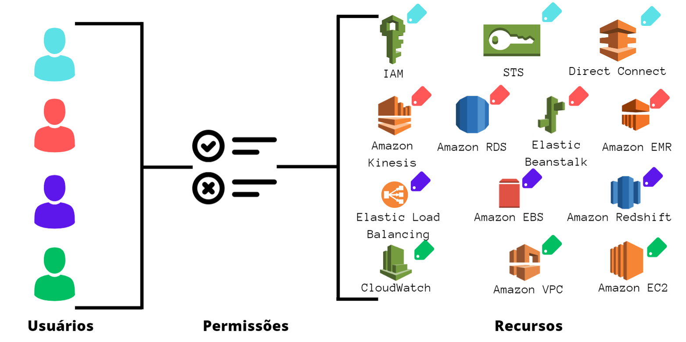
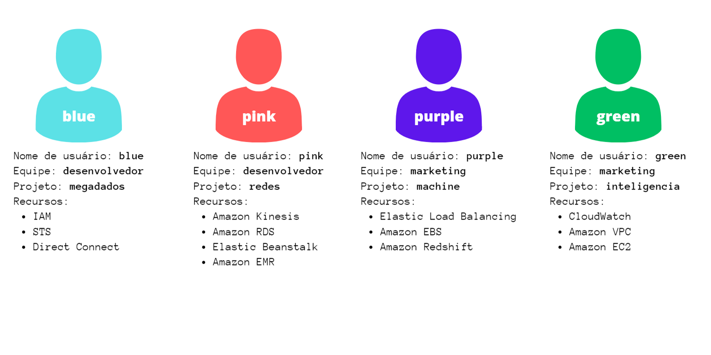

O AWS IAM é um serviço da Web que permite controlar o acesso aos recursos da AWS de uma maneira segura, permitindo o gerenciamento das permissões de acesso aos recursos pelos usuários. Dentre os recursos fornecidos do IAM, é possível realizar um acesso compartilhado à sua Conta da AWS, conceder permissões granulares (permissões diferentes para pessoas diferentes) e acessar diferentes aplicações da AWS.
Para controlar os acessos, é necessário utilizar políticas definindo as permissões aos usuários. A política IAM é composta por alguns elementos, sendo eles:
Dentro de uma empresa, muitas vezes é necessário conceder diferentes permissões para os diferentes cargos ou equipes de trabalho. Com isso, é possível usar as etiquetas de recursos da AWS e as etiquetas de entidades de função do IAM para implementar uma estratégia ABAC para serviços compatíveis com ela, concedendo ou não permissões com base nesses atributos. Para esse projeto, será concedido direito a uso de diferentes recursos da AWS presentes na imagem à baixo.
Sendo assim, a ideia será criar quatro usuários pertencentes a quatro projetos diferentes, sendo dois da equipe de desenvolvedores e dois da equipe de marketing. Com essa separação, cada usuário terá acesso a alguns recursos da AWS específicos para seus projetos como mostrado abaixo, além de poderem criar, alterar, ler e apagar os dados de seus próprios projetos/arquivos. Cada usuário terá acesso aos recursos AWS que estão marcados com suas determinadas cores. Além disso, um usuário só poderá editar arquivos de seu projeto, porém poderá visualizar os arquivos dos outros integrantes de sua equipe.
Para executar as etapas de instalação do serviço, será necessário possuir:
git cloneCrie um arquivo na pasta iam/config chamado config.tfvars.json com o seguinte conteúdo (coloque os valores da sua própria conta nas três primeiras variáveis):
{
"AWS_ACCESS_KEY_ID": "XXXXXXXXXXXXXXXXXXXX",
"AWS_SECRET_ACCESS_KEY": "xxxxxxxxxxxxxxxxxxxxxxxxxxxxxxxxxxxxxxxxx",
"AWS_ACCOUNT_ID": "123456789012",
"AWS_USER_NAME1": "blue",
"AWS_USER_NAME2": "pink",
"AWS_USER_NAME3": "purple",
"AWS_USER_NAME4": "green",
"AWS_TEAM_1": "desenvolvedores",
"AWS_TEAM_2": "marketing",
"AWS_PROJECT_1": "megadados",
"AWS_PROJECT_2": "redes",
"AWS_PROJECT_3": "machine",
"AWS_PROJECT_4": "inteligencia"
}
Baixe as bibliotecas necessárias para o programa por meio do comando:
python -m pip install -r requirements.txtPara rodar a solução, será necessário rodar o código abaixo no Prompt de Comando:
terraform initDepois, rodar o seguinte código:
terraform apply -var-file=config/config.tfvars.jsonCom o arquivo config.tfvars.jsoncriado, foi necessário criar o arquivo que define o tipo dessas variáveis, chamado variables.tf . Nele, foi colocado o seguinte código:
# ACCESS KEY:
variable "AWS_ACCESS_KEY_ID" {
type = string
sensitive = true
}
# SECRET KEY:
variable "AWS_SECRET_ACCESS_KEY" {
type = string
sensitive = true
}
# ACCOUNT ID:
variable "AWS_ACCOUNT_ID" {
type = string
sensitive = true
}
variable "AWS_USER_NAME1" {
type = string
sensitive = false
}
variable "AWS_USER_NAME2" {
type = string
sensitive = false
}
variable "AWS_USER_NAME3" {
type = string
sensitive = false
}
variable "AWS_USER_NAME4" {
type = string
sensitive = false
}
variable "AWS_TEAM_1" {
type = string
sensitive = false
}
variable "AWS_TEAM_2" {
type = string
sensitive = false
}
variable "AWS_PROJECT_1" {
type = string
sensitive = false
}
variable "AWS_PROJECT_2" {
type = string
sensitive = false
}
variable "AWS_PROJECT_3" {
type = string
sensitive = false
}
variable "AWS_PROJECT_4" {
type = string
sensitive = false
}
Primeiramente, foi necessário criar os quatro usuários (blue, pink, purple, green) e adicionar as suas respectivas tags de equipe e projeto.
Para isso, repetimos o código abaixo mudando apenas as variáveis, e assim criamos os usuários.
resource "aws_iam_user" "user_create" { # Cada "resource" precisa de um "name" específico
name = var.AWS_USER_NAME1 # O nome do usuário será adcionado automaticamente aqui, baseado no que foi declarado nas configurações
tags = {"access-project":"${var.AWS_PROJECT_1}", # As tags representam o projeto e a equipe que o usuário faz parte
"access-team": "${var.AWS_TEAM_1}"
}
}
Para acessar o código completo dos usuários, basta clicar aqui. Na tabela abaixo, podemos ver as tags que foram utilizadas e os usuários.
| User name | User tags - chave | User tags - valor |
|---|---|---|
| blue | access-project e access-team | megadados e desenvolvedores |
| pink | access-project e access-team | redes e desenvolvedores |
| purple | access-project e access-team | machine e marketing |
| green | access-project e access-team | inteligencia e marketing |
Com os usuários e tags criadas, passamos agora para a criação das políticas. Será necessário criar uma política gerenciada pelo cliente chamada access-assume-role com a finalidade de permitir que um usuário assuma qualquer função em sua conta com o prefixo access-. Com essa política criada, torna-se possível realizar a divisão das equipes e projetos entre os usuários.
{
"Version": "2012-10-17",
"Statement": [
{
"Sid": "AssumeRole",
"Effect": "Allow",
"Action": "sts:AssumeRole",
"Resource": "arn:aws:iam:: 123123123123:role/access-*",
"Condition": {
"StringEquals": {
"iam:ResourceTag/access-project": "${aws:PrincipalTag/access-project}",
"iam:ResourceTag/access-team": "${aws:PrincipalTag/access-team}"
}
}
}
]
} Passamos agora para a implementação da política do controle de acesso baseado em atributos chamada access-same-project-team. Essa política terá como finalidade atribuir os recursos de create, read, edit e delete levando em consideração as tags de cada usuário. A criação dessa política será semelhante à criação da política gerenciada pelo cliente, sendo necessário seguir os seguintes passos.
{
"Version": "2012-10-17",
"Statement": [
{
"Sid": "AllActionsSecretsManagerSameProjectSameTeam",
"Effect": "Allow",
"Action": "secretsmanager:*",
"Resource": "*",
"Condition": {
"StringEquals": {
"aws:ResourceTag/access-project": "megadados",
"aws:ResourceTag/access-team": "desenvolvedores"
},
"ForAllValues:StringEquals": {
"aws:TagKeys": [
"access-project",
"access-team",
"Name",
"OwnedBy"
]
},
"StringEqualsIfExists": {
"aws:RequestTag/access-project": "megadados",
"aws:RequestTag/access-team": "desenvolvedores"
}
}
},
{
"Sid": "AllResourcesSecretsManagerNoTags",
"Effect": "Allow",
"Action": [
"secretsmanager:GetRandomPassword",
"secretsmanager:ListSecrets"
],
"Resource": "*"
},
{
"Sid": "ReadSecretsManagerSameTeam",
"Effect": "Allow",
"Action": [
"secretsmanager:Describe*",
"secretsmanager:Get*",
"secretsmanager:List*"
],
"Resource": "*",
"Condition": {
"StringEquals": {
"aws:ResourceTag/access-team": "desenvolvedores"
}
}
},
{
"Sid": "DenyUntagSecretsManagerReservedTags",
"Effect": "Deny",
"Action": "secretsmanager:UntagResource",
"Resource": "*",
"Condition": {
"ForAnyValue:StringLike": {
"aws:TagKeys": "access-*"
}
}
},
{
"Sid": "DenyPermissionsManagement",
"Effect": "Deny",
"Action": "secretsmanager:*Policy",
"Resource": "*"
}
]
}
resource "aws_iam_policy" "access-same-1" {
name = "access-same-${var.AWS_PROJECT_1}-${var.AWS_TEAM_1}"
policy = "${file("policies/AccessSame-${var.AWS_PROJECT_1}-${var.AWS_TEAM_1}.json")}"
}
Foi necessário criar também uma política para permitir "Full access" do sts. Para isso, foi utilizado o código abaixo:
resource "aws_iam_policy" "stsAccess" {
name = "stsFullAccess"
policy = EOF # Adicione "<<" na frente do "EOF"
{
"Version": "2012-10-17",
"Statement": [
{
"Effect": "Allow",
"Action": "sts:AssumeRole",
"Resource": "arn:aws:iam::${var.AWS_ACCOUNT_ID}:role/UpdateAPP"
}
]
}
EOF
}
Para acessar o código completo das políticas, basta clicar aqui.
Agora, iremos criar os grupos para que possamos associar as políticas aos grupos, ao invés de associarmos direto aos usuários. Fazendo isso, quando adicionarmos um usuário ao grupo, ele receberá automaticamente as políticas do grupo.
Para criarmos um grupo, foi necessário utilizar o seguinte código:
resource "aws_iam_group" "desenvolvedores" {
name = var.AWS_TEAM_1
path = "/users/"
}
Para facilitar a associação de políticas, foram criados grupos para todos os projetos e equipes. Depois, foi necessário adicionar os usuários às suas respectivas equipes e projetos por meio do código a seguir:
resource "aws_iam_group_membership" "equipeDesenvolvedores" {
name = "equipe-${var.AWS_TEAM_1}"
users = [
aws_iam_user.user_create.name,
aws_iam_user.user_createPink.name,
]
group = aws_iam_group.desenvolvedores.name
}
Para acessar o código completo dos grupos, basta clicar aqui.
Começamos então a criar as Job Functions para o nosso projeto. Para isso, seguimos o conteúdo apresentado na tabela abaixo para cria-las.
| Job function | Role tags | Role name | Role description |
|---|---|---|---|
| Projeto megadados desenvolvedores | access-project = megadados e access-team = desenvolvedores | access-megadados-desenvolvedores | Permite os desenvolvedores lerem todos os arquivos de desenvolvedores e criar- deletar/ editar os arquivos do projeto de megadados de desenvolvedores. |
| Projeto redes desenvolvedores | access-project = redes e access-team = desenvolvedores | access-redes-desenvolvedores | Permite os desenvolvedores lerem todos os arquivos de desenvolvedores e criar- deletar/ editar os arquivos do projeto de redes de desenvolvedores. |
| Projeto machine marketing | access-project = machine e access-team = marketing | access-machine-marketing | Permite a equipe de marketing ler todos os arquivos de marketing e criar- deletar/ editar os arquivos do projeto de machine de marketing. |
| Projeto inteligencia marketing | access-project = inteligencia e access-team = marketing | access-inteligencia-marketing | Permite a equipe de marketing ler todos os arquivos de marketing e criar- deletar/ editar os arquivos do projeto de inteligencia de marketing. |
Foi necessário utilizar o seguinte código para cada uma das roles, tanto para cria-las, como tambem para associa-las às políticas access-same-project-team criadas anteriormente.
resource "aws_iam_role" "roleAssume" {
name = "access-${var.AWS_PROJECT_1}-${var.AWS_TEAM_1}"
tags = {"access-project":"${var.AWS_PROJECT_1}",
"access-team": "${var.AWS_TEAM_1}"
}
assume_role_policy = EOF # Adicione "<<" na frente do "EOF"
{
"Version": "2012-10-17",
"Statement": [
{
"Effect": "Allow",
"Principal": {
"AWS": "arn:aws:iam::${var.AWS_ACCOUNT_ID}:root"
},
"Action": "sts:AssumeRole",
"Condition": {
"StringEquals": {"iam:ResourceTag/access-project": "${var.AWS_PROJECT_1}",
"iam:ResourceTag/access-team":"${var.AWS_TEAM_1}"}
}
}
]
}
EOF
}
resource "aws_iam_role_policy_attachment" "attach1" {
role = aws_iam_role.roleAssume.name
policy_arn = aws_iam_policy.access-same-1.arn
}
Com todas as políticas, usuários, grupos e funções criadas, precisamos associar as permissões aos usuários ou grupos. Iniciamos associando as permissões de grupos por meio do comando a seguir:
resource "aws_iam_group_policy_attachment" "AttachGroup1" {
group = aws_iam_group.megadados.name
policy_arn = aws_iam_policy.access-same-1.arn
}
Utilizamos esse código para deinir todas as políticas que poderiam ser associadas a todos os membros do grupo, como a política access-assume-role e access-same-project-team.
Agora que as permissões gerais foram aplicadas, iniciamos então o processo de permissões específicas para cada usuário. Para isso, utilizamos em grande parte as políticas próprias da aws que podem ser associadas aos usuários por meio do código a seguir:
resource "aws_iam_user_policy_attachment" "iam1" {
user = aws_iam_user.user_create.name
policy_arn = "arn:aws:iam::aws:policy/IAMFullAccess"
}
Já as políticas que foram criadas por nós, é necessário utilizar o seguinte código:
resource "aws_iam_user_policy_attachment" "sts" {
user = aws_iam_user.user_create.name
policy_arn = aws_iam_policy.stsAccess.arn
}
Para testarmos o funcionamento da solução, será necessário seguir os seguintes passos: